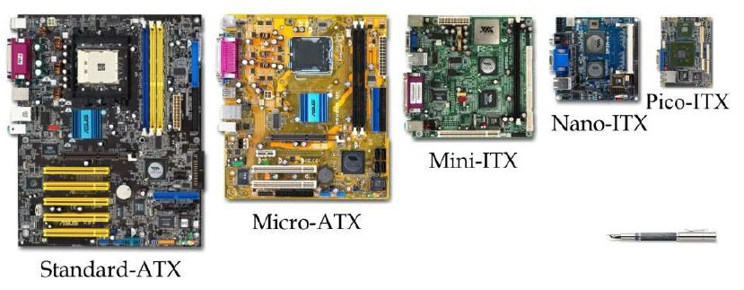
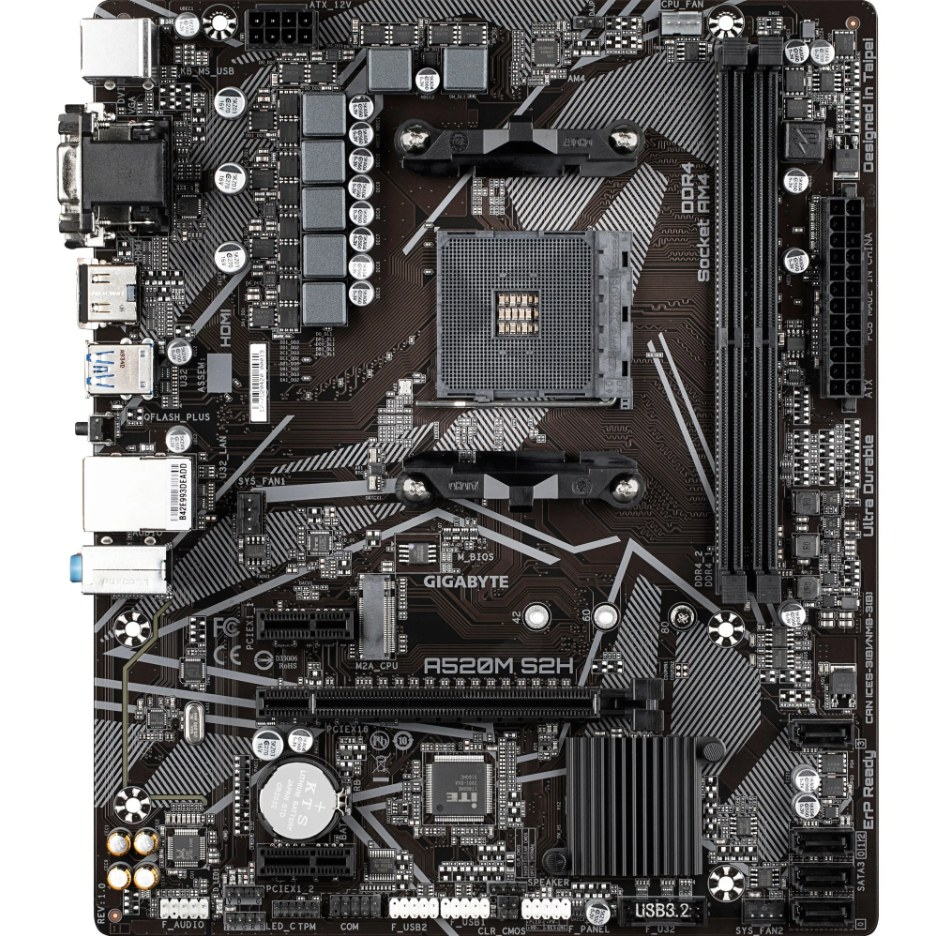
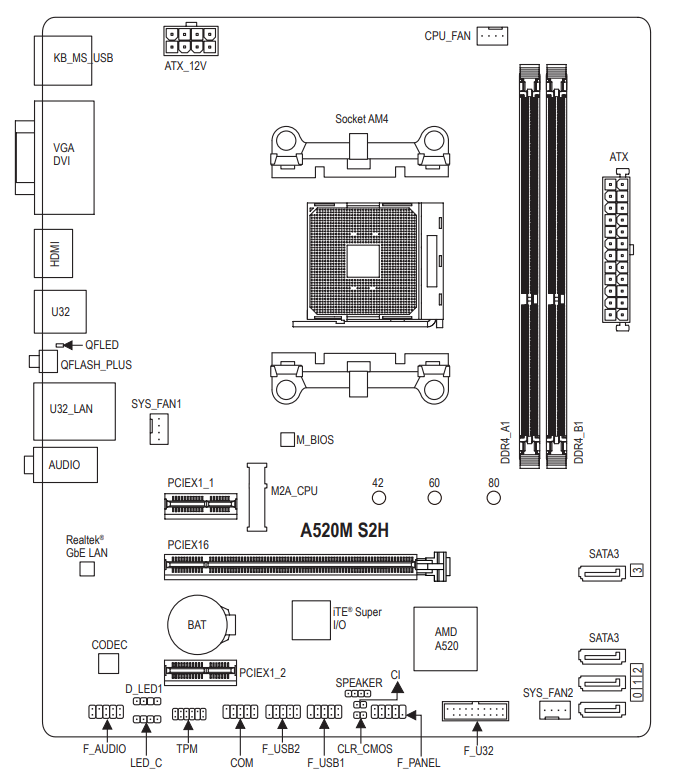
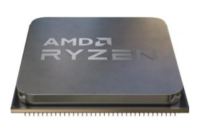
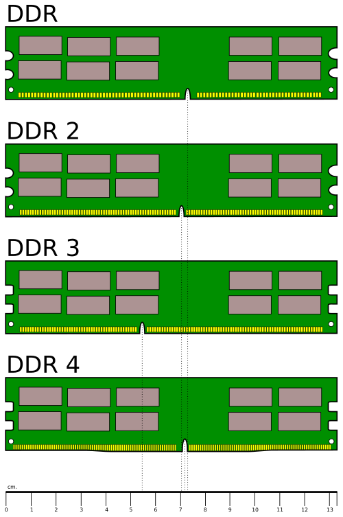
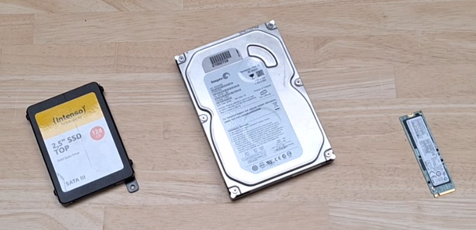
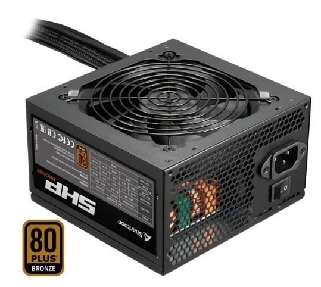

De componenten van een pc
Een desktop bestaat uit een handvol onderdelen die elk hun eigen maat, aansluiting en snelheid hebben. Hieronder staat per onderdeel welke gegevens je nodig hebt en in welke eenheid ze uitgedrukt worden.
De kast en de vormfactor
De vormfactor is de afspraak over de afmetingen van een moederbord en over waar de schroefgaten en de aansluitingen zitten. Ze bepaalt welk moederbord in welke kast past, en ook welke voeding erbij hoort.

| Vormfactor | Afmetingen | Waar je ze vindt |
|---|---|---|
| ATX | 305 × 244 mm | De standaardmaat voor een desktop, met plaats voor de meeste uitbreidingskaarten |
| Micro-ATX | 244 × 244 mm | Even breed als ATX en korter, met minder PCI Express-slots |
| Mini-ITX | 170 × 170 mm | De kleinste courante maat, met één uitbreidingsslot |
| BTX | 325 × 266 mm | Een oudere vormfactor van Intel, bedoeld voor een betere luchtstroom, die je vandaag zelden nog aantreft |
Een kast die voor ATX gemaakt is, neemt ook de kleinere moederborden op: de schroefgaten van Micro-ATX vallen samen met een deel van die van ATX. Omgekeerd werkt het niet, want een ATX-moederbord is langer dan de ruimte in een Micro-ATX-kast.
Het moederbord
Het moederbord verbindt alle onderdelen met elkaar. Dat van dit labo is een Gigabyte A520M S2H, een moederbord in Micro-ATX.


De socket en de chipset
De socket is de aansluiting waar de processor in gaat, en ze bepaalt welke processors op
dit moederbord passen. AM4 en AM5 zijn sockets van AMD, LGA1200 en LGA1700 die van Intel. Hier staat
Socket AM4 naast de socket gedrukt. De chipset is de chip die het
verkeer tussen de processor en de rest van het moederbord regelt. Ze bepaalt mee hoeveel USB-poorten en
SATA-poorten er zijn en of je de processor mag overklokken. Hier is dat de A520, en die naam zit in de naam
van het moederbord zelf: een A520M S2H is een A520-moederbord in Micro-ATX.
Het geheugen en de opslag
De DIMM-slots nemen de geheugenmodules op. Hoeveel er zijn en hoeveel GB het moederbord in
totaal aankan, staat in de handleiding. Dit moederbord heeft er twee,
DDR4_A1 en DDR4_B1. De SATA-poorten nemen een
harde schijf of een 2,5-inch SSD op, en een M.2-aansluiting neemt een SSD op die plat
op het moederbord ligt. Hier zijn dat vier SATA-poorten aan de rechterrand, SATA3 0 tot
SATA3 3, en één M.2-aansluiting, aangeduid met M2A_CPU.
De uitbreidingsslots
PCI Express bestaat in verschillende breedtes, en het getal achter de x is het aantal lanes. Een
x16-slot is het langste en is bedoeld voor een grafische kaart; een
x1-slot is kort en neemt een netwerkkaart, een geluidskaart of een uitbreiding met extra
USB-poorten op. Een kaart past in een slot dat even breed of breder is dan de kaart zelf. Dit moederbord
heeft één x16-slot, PCIEX16, en twee x1-slots: PCIEX1_1 ligt erboven en
PCIEX1_2 eronder.
De aansluitingen aan de achterkant
Op de foto en op de tekening zit de achterkant links, als een blok connectoren op elkaar. In de kast steekt dat blok door de achterwand naar buiten. Van boven naar onder zitten er een PS/2-poort met twee USB-poorten, de drie beeldaansluitingen, vier USB 3-poorten, de netwerkpoort en drie geluidsjacks.
- PS/2. Een ronde connector met zes pinnen, voor een toetsenbord of een muis. Waar er twee zijn, is de paarse voor het toetsenbord en de groene voor de muis. Dit moederbord heeft er één, die allebei aankan, in hetzelfde blok als twee USB-poorten.
- Beeld. VGA, ook D-SUB genoemd, is analoog en heeft vijftien pinnen in drie rijen. DVI, DisplayPort en HDMI zijn digitaal. Dit moederbord heeft VGA, DVI en HDMI, en geen DisplayPort.
- USB. Een USB 2-poort heeft vier contacten en een zwart of wit binnenstuk; een USB
3-poort heeft er negen en is aan zijn blauwe binnenstuk te herkennen. Dit moederbord heeft er zes aan de
achterkant: twee USB 2-poorten bij de PS/2-poort en vier blauwe USB 3-poorten, twee bij
U32en twee bijU32_LAN. - Netwerk. Een RJ-45-poort, waarvan de snelheid 100 Mbps, 1 Gbps of meer is. Wat een moederbord haalt, staat in de handleiding. Dit moederbord haalt 1 Gbps, en aan de lampjes in de poort zie je wat je werkelijk krijgt: oranje is 1 Gbps, groen is 100 Mbps en uit is 10 Mbps.
- Geluid. Drie jacks van 3,5 mm, elk met een eigen kleur: de groene voor de luidsprekers of de koptelefoon, de roze voor een microfoon en de blauwe voor een lijningang.
Tussen de USB-poorten zit ook nog een knopje, QFLASH_PLUS. Daarmee vernieuw je de software van
het moederbord vanaf een USB-stick terwijl de computer uitstaat.
Op het moederbord zit een platte batterij, meestal een CR2032. Ze voedt het geheugen waarin de BIOS-instellingen staan en de klok die de tijd bijhoudt terwijl de computer van het net los is. Is ze leeg, dan start de computer met de standaardinstellingen op en klopt de datum niet meer.
De processor

Bij een processor kijk je naar vier gegevens.
- Het aantal cores, dus het aantal rekenkernen die naast elkaar werken. Vier tot acht is vandaag gebruikelijk in een desktop.
- De kloksnelheid in GHz, het aantal klokpulsen per seconde. Een moderne desktopprocessor zit rond 3 tot 5 GHz, en het hoogste getal is meestal de boostsnelheid die hij kort haalt.
- Het cachegeheugen, klein en snel geheugen in de processor zelf. L1 is het kleinste en het snelste en zit per core, L2 is groter, en L3 wordt door alle cores gedeeld.
- Het energieverbruik in watt, vaak TDP genoemd. Dat getal zegt hoeveel warmte de koeling moet kunnen afvoeren.
Sommige processors hebben een ingebouwde grafische kaart. Dan komt het beeld van de processor zelf en werkt de beeldaansluiting op het moederbord. Heeft de processor die niet, dan blijft het scherm zwart tot er een grafische kaart in het x16-slot zit.
Op de processor zit een koeler die de warmte afvoert die het energieverbruik hierboven aangeeft. De
ventilator van die koeler hangt aan een eigen aansluiting op het moederbord, die met
CPU_FAN aangeduid staat.
Het moederbord meet het toerental op de CPU_FAN-aansluiting. Krijgt het daar geen
signaal, dan zet het de computer na enkele seconden weer uit: een processor zonder koeling loopt in
die tijd al te warm.
Het werkgeheugen
Het werkgeheugen, of RAM, houdt vast waar de processor op dit moment mee bezig is. Het is leeg zodra de spanning wegvalt, en daarin verschilt het van de opslag.
De generatie staat als DDR met een cijfer erachter: DDR3, DDR4 of DDR5. Elke generatie heeft een eigen inkeping in de contactstrip, dus een DDR4-module past in een DDR5-slot noch omgekeerd. Naast de generatie kijk je naar de capaciteit in GB, de snelheid in MT/s en de spanning.

| Generatie | Spanning | Snelheid |
|---|---|---|
| DDR3 | 1,5 V | 800 tot 2133 MT/s |
| DDR4 | 1,2 V | 2133 tot 3200 MT/s volgens de standaard, hoger met een profiel uit de BIOS |
| DDR5 | 1,1 V | 4800 MT/s en hoger |
Staan er vier DIMM-slots op het moederbord en zet je er twee modules in, dan bepaalt de handleiding van het moederbord welke twee slots je daarvoor gebruikt. Meestal zijn dat het tweede en het vierde, geteld vanaf de processor. Zo spreekt de processor de twee modules in dual channel aan en verdubbelt de breedte waarmee hij het geheugen bereikt.

Een module die als 3600 MT/s verkocht wordt, start op aan de standaardsnelheid van zijn generatie. De hogere snelheid zit in een profiel dat in de module opgeslagen is, en dat zet je in de BIOS aan.
De opslag
Opslag houdt je bestanden vast ook wanneer de computer uitstaat. Er zijn twee technieken.
- Een mechanische harde schijf schrijft magnetisch op draaiende schijven, met een leeskop die zich naar de juiste plaats verplaatst. Die verplaatsing kost tijd, en daarom haalt zo'n schijf ongeveer 100 tot 200 MB/s.
- Een SSD heeft geen bewegende delen en schrijft in flashgeheugen. Er is geen zoektijd, dus een bestand openen gaat merkbaar sneller.

Het protocol waarmee de schijf aan het moederbord hangt, bepaalt mee de snelheid. SATA III haalt 6 Gbit/s, wat in de praktijk op ongeveer 550 MB/s neerkomt en waar een SATA-SSD tegenaan loopt. NVMe loopt over PCI Express en heeft die grens niet, waardoor een M.2-SSD een veelvoud daarvan haalt.
| Vormfactor | Protocol | Aansluiting |
|---|---|---|
| 3,5 inch | SATA | Datakabel en voedingskabel, in een houder in de kast |
| 2,5 inch | SATA | Datakabel en voedingskabel, in een houder in de kast |
| M.2 | SATA of NVMe | Rechtstreeks in het M.2-slot, met één schroef vast |
Of een M.2-SSD SATA of NVMe is, lees je af aan de inkepingen in de contactstrip. Welk van de twee een M.2-slot aanvaardt, staat in de handleiding van het moederbord.
Een hybride schijf zet een kleine hoeveelheid flashgeheugen voor een mechanische schijf en houdt daarin bij wat je het vaakst opvraagt. IDE en PATA zijn de oudere aansluitingen, met een brede lintkabel, die je nog op afgedankte computers terugvindt.
De voeding
De voeding zet de 230 V van het net om in de gelijkspanningen die de onderdelen nodig hebben. Ze levert +3,3 V, +5 V en +12 V, en daarnaast een lijn van −12 V en een standby-lijn van +5 V die blijft staan zolang de stekker in het stopcontact zit.

Het vermogen in watt zegt hoeveel de voeding samen kan leveren. Het rendement zegt hoeveel van het opgenomen vermogen er aan de uitgang overblijft; de rest wordt warmte. De keurmerken 80 PLUS Bronze, Silver en Gold leggen daar een ondergrens op, en een voeding werkt op zijn efficiëntst rond de helft van zijn nominale belasting.